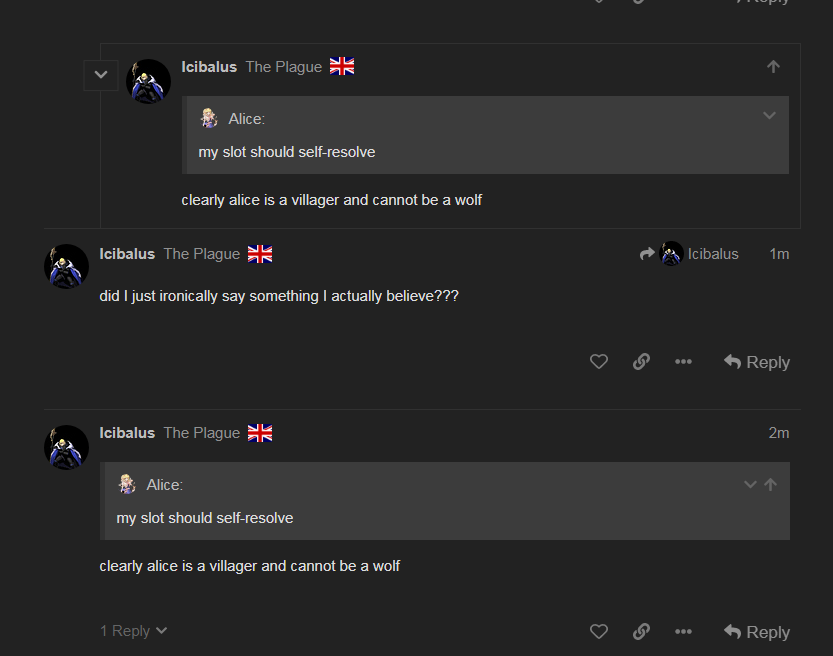
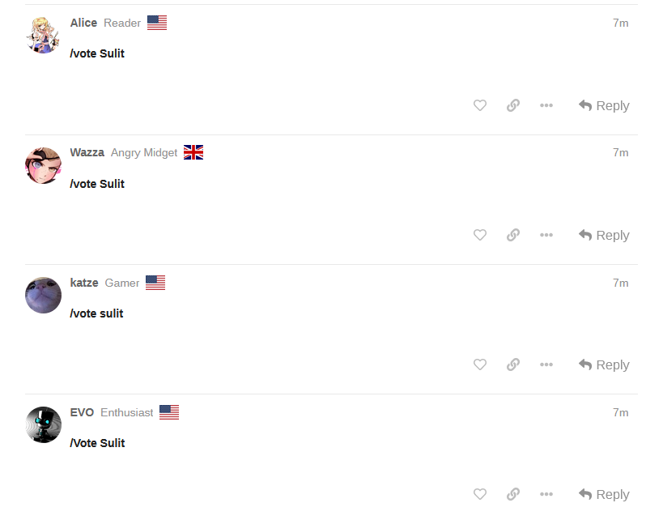

So I suggest we build two worlds
One where Marshal is convert, other where they are starter
That sounds like a good idea to me. Want to do it together, or should both of us build each version separately?
Your choice
I’m looking at the EoD 2 wagons
Going to just try and do both then.
Here’s that vc for reference
1 Like
Actually, are we constructing this under presumption that Apprentice is starting scum, town, or both?
Not sure
Marshal’s vote is mostly NAI from my perspective in regards to Apprentice’s alignment, since valid cases could be made for either one
EoD1 vc here
1 Like
Tinfoil world
Alice/Marshal/Kyo starting with Wazza d2 convert and Vulgard d3
Failed night kill on Arete n1
Noaction on n2 to “confirm” Alice while they slept all offensives
1 Like
That’s a tinfoil alright.
3 Likes
My brain is so big it forgot how to work
4 Likes
Okay so a world where Marshal is a starting Witch Doctor, but was converted D2 off of Kyo’s Ritual.
I do not think he ever specified his N1 action, so lets forget that right off the bat:
This town Marshal claims a Blood Mage D1 to ‘bait out the actual CC’. Since this Marshal is town, we obviously take these words as truth. He also wants to Traitor hunt D1 to see who bites the bait.
(Unrelated to what I’m going to say next, but it looks like the whole Minister charade was pre-planned):
https://forum.imperium42.com/t/fm-ritual-mafia-iv-day-3-lynch-phase-10-16/81237/472?u=anstreim
Town Marshal reads Apprentice as scummy and wants that slot dead, because in this world, Apprentice is actually a wolf but Marshal does not know it. He also jumps on Appel > Apprentice CFD because he understands that at that point, no one is lynching Apprentice.
Come D2, town Marshal understands that there is a possibility to lynch a Heretic, therefore he ditches his initial Blood Mage and claims a Minister, hoping to avoid conversion, because who in their mind converts an IC, right?
He also votes Apprentice as a proposed Italy peek because again, he does not know that Apprentice is a wolf, but he finds him scummy.
Except after switch to Kyo and subsequent Sorcerer Ritual, Kyo actually converts him, so Marshal spews this out of frustration and then discards it as a meme:
https://forum.imperium42.com/t/fm-ritual-mafia-iv-day-3-lynch-phase-10-16/81237/6076?u=anstreim
https://forum.imperium42.com/t/fm-ritual-mafia-iv-day-3-lynch-phase-10-16/81237/6084?u=anstreim
The thing is, in a world where Apprentice is a wolf and Marshal just got converted, for some reason Marshal keeps pushing on him, to the point where he votes Apprentice during D2 EoD when the votes are particularly close, risking Apprentice’s execution.
-Does that make sense, even if this is done for towncred because he is suffering from TMI that Amelia is town? Very little, you risk killing a wolf.
-Does this make sense if Apprentice is actually town and converted Marshal was just given a free pass to lynch a scummy townie, while earning towncred for pushing against Amelia’s lynch? Yes, more than the first scenario.
Meanwhile, in a starting scum Marshal world. Scum Marshal enters the thread by memeing and joke claiming IC to Kyo, while pushing Apprentice because Apprentice is slanking/easy target.
Starting scum Marshal votes to kill Appel off D1 because he knows that its town and Apprentice isn’t getting lynched anyway, which he is absolutely fine with.
Come D2, scum Marshal intentionally swaps his Ritual vote to Kyo and sows panic among the court (together with Kat?) to fearmonger people into switching away from Italy, while retracting his Blood Mage claim in the process (understandable, 4-way thunderdome with Seth/Arete/Apprentice) but for some reason decides to claim Minister next. It makes little sense, but I see Marshal pulling this off purely because most wouldn’t expect scum to claim something like this + the chaos factor.
The “conversion” slip posted above can be just discredited as a scummy meme.
Next, scum Marshal pushes Apprentice again while pushing against Amelia’s lynch, whom he knows is not a wolf.
-Does this make sense if Apprentice is town? Kind of, because he’s earning towncred for pushing his scumread (who he knows he is town), while also ‘defending’ Amelia (who is also town).
-Does this make sense if Apprentice is a wolf or a convert? NO, it does not.
Because like in situation 1, this is the same exact thing. Sure, you can’t just retract your scumread on a fellow wolf (why would you ever push them to begin with is another question), but at least pretend that you are going along with Amelia’s wagon because you think its hopeless to CFD to Apprentice?
Tl;dr:
Marshal (convert) + Apprentice (starting scum) – Possible, doubtful;
Marshal (convert) + Apprentice (town) – A little bit more possible;
Marshal (starting scum) + Apprentice (starting scum) – Extremely unlikely based on both Marshal’s and Apprentice’s play and claims;
Marshal (starting scum) + Apprentice (town) – Very likely, supported by mechanical evidence.

This bug seems to happen a lot lately (posts being in wrong order, or sometimes being outright skipped and non-existent unless you reload the page)
https://forum.imperium42.com/t/fm-ritual-mafia-iv-day-3-lynch-phase-10-16/81237/13463?u=geyde
this is a fucking monolith
https://forum.imperium42.com/t/fm-ritual-mafia-iv-day-3-lynch-phase-10-16/81237/13585?u=geyde
I don’t think the system works
3 Likes
Telling people the intention behind your actions is pro ev for both scum and town since it makes themselves more reasonable
Did you actually read it? Does it change your opinion on Arete?
I’m catching up right now but it seems like Alice has arrived to a similar conclusion as me (regarding Marshal):
https://forum.imperium42.com/t/fm-ritual-mafia-iv-day-3-lynch-phase-10-16/81237/13537?u=anstreim
Also I was too tired yesterday to actually elaborate on Marshal being convert vs OG groupscum further, so let me just do it now.
Marshal (convert) + Apprentice (starting scum) – Makes no sense, invalidates Apprentice’s logs, meaning information about Marshal/Kat/Braixen on N1 is false and made up, which is a very weird play for a wolf. Further disproven by Marshal’s pushes on Apprentice D2.
Marshal (convert) + Apprentice (town) – Makes some sense socially, but also means that either Kat or Braixen is starting groupscum or a traitor, and Italy was swapped off of Kat N1.
Marshal (starting scum) + Apprentice (starting scum) – Does not make sense socially (why would both groupscum claim Blood Mage and why would Marshal request peek on Apprentice/actively attempt to lynch him) and mechanically, because Apprentice’s result implicates Marshal for no reason.
Marshal (starting scum) + Apprentice (town) – Means that Apprentice’s N1 results are trustworthy (one within Marshal/Kat/Braixen is a Traitor or a Heretic), makes sense because of Marshal’s rescind on his claim, also lines up with Marshal’s flip and Italy’s N1 result:
He checked Alice, Arete, Marshal and was swapped off > got 0 Heretics within that group.
Considering Marshal was a Shaman, it is likely he just body swapped anticipating an early check.
So this would semi-clear both Alice and Arete.
Geez what a surprise.
